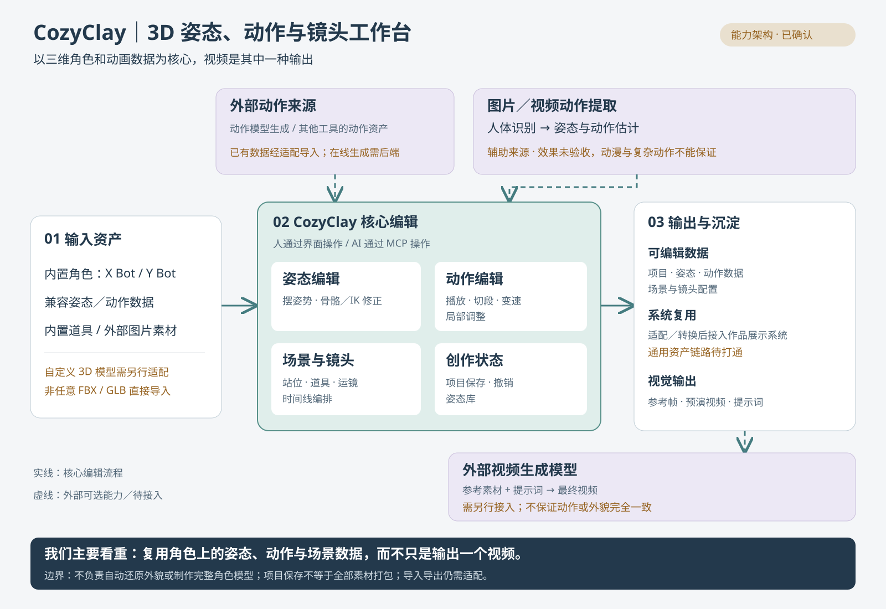
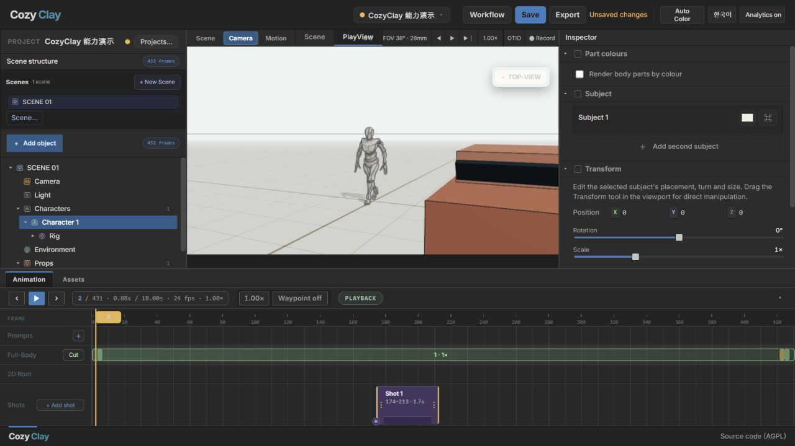

添加汽车、修改位置，让人物与道具处于同一空间。还可使用基础几何体搭建场景。
COZYCLAY · BROWSER-BASED PREVIS
先把镜头拍出来，
再交给 AI 生成。
在浏览器里布置人物和道具、播放骨骼动作、设计镜头。用可编辑的三维预演，把“我要这样的画面”变成具体的站位、焦距和时间安排。
本地实测 · 18 秒动作 / 432 帧 / 24 fps · MCP 自动构图与项目保存已验证
能力架构与资产边界
核心是兼容角色上的姿态、动作、场景与镜头数据编辑。已有动作可经适配导入；在线生成新动作才需要相应后端。当前内置 X Bot / Y Bot，自定义三维模型需另行适配。

图片／视频提取效果尚未验收，动漫与复杂动作不能保证。外部视频生成与作品展示系统的通用资产链路仍需接入。查看完整架构图 →

本地实测截图，非概念图。角色播放库自带的 walk-then-stop 动作，汽车由编辑器添加。截图中的画面为三维预演。
加载、播放和暂停官方动作，跳到指定帧。编辑器还提供切段、变速和姿态修正工具。
切换广角预设、添加镜头段，并通过 MCP 按“全景、前侧面、平视、35mm”自动构图。
AI 发出结构化命令，修改在线编辑器，再读取实际镜头参数。项目已通过同一接口保存到文件。
文字生成新动作、轨迹修正与局部重生成依赖外部 Kimodo GPU 服务，本次尚未配置或验证。
提供提示词、参考帧与预演视频。最终 AI 成片需要下游模型；节点画布并不自动等于生成闭环。
一次真实的 AI 镜头操作
本次通过项目自带 MCP 执行 frame_shot → describe_shot → save_project。编辑器确认的结果：
WIDE SHOT · FRONT ¾ R · EYE LEVEL · 35MM 人物占画面高度 41% · 相机距离 7.59 m 已保存：capability-demo.cclayproject
这展示了它的关键设计：AI 的文字意图能落到具体镜头参数，并保存为后续可编辑的项目。
官方能力演示
视频来自上游仓库，展示范围大于本次实测范围。播放需要本地工作台服务运行。